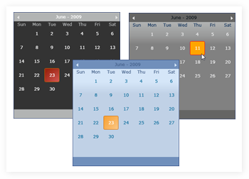

The CalendarControl is used to select Dates with different cultures, styles and colors.

Figure 454: Calendar Control
Feature Summary
· AllowMultipleSelection: select multiple dates in the CalendarControl by using this property
· Animation Time: control the speed of month navigation in the CalendarControl
· Background Color: set the background color for the CalendarControl
· Border Color: set the border color for the control
· Calendar Style: set the calendar style of the control
· Culture: set the culture for the control
· Date: displays the default date at the bottom of the CalendarControl, while loading the control
· Date Foreground Color: set the foreground color for selected values of this control
· Day Foreground Color: set the foreground color for the day value of the control
· DisplayCurrentDate: specify whether to display the current date at the bottom of this control by using this property
· Header Background Color: set the background color for the header of the CalendarControl
· Header Foreground Color: set the foreground color for the header of the CalendarControl
· IsDayNameAbbreviated: specify whether day name should be abbreviated or displayed in full format by using this property
· IsMonthNameAbbreviated: specify whether month name should be abbreviated or displayed in full format by using this property
· MonthChangeDirection: change the direction of month navigation by using this property
· Mouse Hover Cell Background Color: change the background color of a cell, when the mouse pointer moves over the cell
· Mouse Hover Cell Border Color: change the border color of a cell, when the mouse pointer moves over the cell
· Mouse Hover Cell Border Thickness Color: change the border thickness of a cell, when the mouse pointer moves over the cell
· Mouse Hover Cell Corner Radius Color: change the corner radius of a cell, when the mouse pointer moves over the cell
· Mouse Hover Cell Foreground Color: change the foreground color of a cell, when the mouse pointer moves over the cell
· Mouse Hover Scroll Button Fill Color: change the scroll button color, when the mouse pointer moves over the next or previous arrow scroll button
· Next Month Days Foreground Color: set the foreground color for the dates that belong to the next month
· Previous Month Days Foreground Color: set the foreground color for the dates that belong to the previous month
· Scroll Button Color: set the color for the scroll buttons
· Selected Cell Background Color: set the background color of the selected cell
· Selected Cell Border Color: set the border color of the selected cell
· Selected Cell Border Thickness: set the border thickness of the selected cell
· Selected Cell Corner Radius: set the corner radius of the selected cell
· Selected Cell Foreground Color: set the foreground color of the selected cell
· Selected Date: set or get the selected date
· Selected Dates: set or get multiple selected dates
· Selection Range Mode: select all the dates that are displayed under a particular day, when you move the mouse pointer over the day
· ShowNextMonthDates: display the dates that belong to the next month along with the current month by using this property
· ShowPreviousMonthDates: display the dates that belong to the previous month along with the current month by using this property
· ShowWeekNumber: view the week numbers in the CalendarControl by using this property
· Visual Style: specifies the visual style for the control
 Getting Started
Getting Started